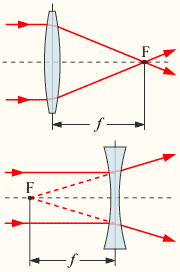

fotosavjeti
teorija fotografije
Da bi uopće mogli razumjeti stvari koje se spominju u slijedećim člancima, ali i da bi se mogli fotoaparatom služiti naprednije od onoga da ga usmjerite prema objektu i okinete, malo se upoznajte sa samim osnovama teorije fotografije.
Svaki fotoaparat se sastoji od nekoliko osnovnih dijelova koji mu omogućavaju da prilagodi sliku koju treba zabilježiti. Zato ćemo objasniti osnovne dijelove i njihov princip rada da bi bolje shvatili što se "događa" unutar fotoaparata i tako se, znajući osnove, lakše njime služili.
leće
Svjetlost kadra koji snimamo najprije prolazi kroz leće fotoaparata, koje lome svjetlost i tako je prilagođavaju senzoru koji će zabilježiti sliku (CCD element, CMOS čip ili fotografski film). Najjednostavniji fotoaparati (jeftini modeli bez optičkog zuma, fotoaparati u mobitelima...) mogu imati samo jednu leću koja usmjerava svjetlost na senzor, i ujedno određuje fokusnu duljinu. Kod kvalitetnijih fotoaparata objektiv se sastoji od cijelog sustava leća koji imaju ulogu prilagođavanja slike i određivanja fokusne duljine.
Leće se izrađuju od prozirnih materijala poput stakla ili polimera, i ovisno o materijalu imaju svoja fizička svojstva koja utječu na kvalitetu slike. Svaki materijal ima različit indeks loma svjetlosti (indeks loma je različit i za različite valne duljine svjetlosti, što uzrokuje kromatske aberacije i još više komplicira konstrukciju objektiva), različitu apsorpciju svjetlosti (upijanje svjetlosti, bolje su "brže" leće koje upijaju manje svjetlosti), mehanička svojstva i mogućnost fine obrade itd.
 Ovisno o svome obliku i dimenzijama, leća ima svoju fokusnu duljinu koja određuje kolika mora biti udaljenost promatranog predmeta od leće da bi on bio u fokusu. U sustavima leća efektivna fokusna duljina ovisi o nizu leća i njihovom međusobnom položaju, a isto vrijedi i za leću čija debljina ne može biti zanemarena. Konveksna leća lomi svjetlost prema unutra, i ima pozitivnu fokusnu duljinu f. Konkavna leća radi suprotno: lomi svjetlost prema vani i zato ima negativnu vrijednost fokusne duljine. Iste tvrdnje vrijede i za konveksna, odnosno konkavna zrcala koja se ponekad koriste u pojedinim fotoaparatima, ovisno o izvedbi objektiva i optičkog tražila. Kod modernih objektiva koji imaju mogućnost zumiranja faktor zuma se mijenja udaljavanjem ili približavanjem leća senzoru, mijenjajući tako kut pod kojim zrake svjetlosti padaju na senzor. Što je objektiv udaljeniji od senzora, to je kut pod kojim dolazi svjetlost manji, pa senzor "vidi" uži dio kadra koji se tako čini bližim jer je projiciran na istu površinu senzora.
Postoji još mnogo faktora koji preko leće utječu na krajnju kvalitetu slike, ali zbog mjesta i preglednosti ćemo ih preskočiti. Recimo samo da su kvalitetno izrađene leće s razlogom skupe. Zbog optičkih zahtjeva potrebno je koristiti vrlo kvalitetne i čiste materijale, konstrukcija leća je relativno dugotrajan proces koji traži dosta eksperimentiranja (koje je u novije vrijeme smanjeno jer postoje dobre računalne simulacije), zahtjevi za mehaničkom preciznosti su visoki, i to sve skupa jako povećava proizvodnu cijenu objektiva.
blenda
Blendu kao sastavni dio optike fotoaparata (ili videokamere) najlakše možemo usporediti sa zjenicom oka. Njezina uloga je da zaustavi višak svjetlosti i tako omogući odgovarajuću ekspoziciju. Jeftini fotoaparati umjesto blende imaju samo jedan otvor točno određenog promjera. Kod normalnih objektiva blenda se sastoji od tankih metalnih pločica koje se pomoću mehanizma dijafragme šire ili skupljaju i tako tvore željeni otvor blende. Što je otvor veći, to će više svjetlosti prodrijeti do senzora za vrijeme ekspozicije.
Pošto je uloga blende zaustavljanje svjetlosti, otvori blende se označavaju f-stop brojem, koji je zapravo omjer fokusne duljine objektiva i promjera otvora blende. Manji f-stop broj označava veći otvor blende, koji omogućuje ulazak više svjetlosti do senzora. Vrijednosti otvora blende su postavljene u koracima na način da svaki slijedeći f-stop zaustavlja dvostruko više svjetlosti. Iz geometrijskih razloga tako postavljeni otvori blende imaju oznake koje su zapravo zaokružene vrijednosti niza potencija broja √2: f/0.7, f/1, f/1.4, f/2, f/2.8, f/4, f/5.6, f/8, f/11, f/16, f/22, f/32, f/45, f/64, f/90, f/128... Obično zum objektivi omogućavaju otvor blende od f/2.8 do f/6.3, a skuplji objektivi imaju i otvore do f/1.4. Posebni objektivi mogu imati otvor i do f/0.7 (oni omogućavaju snimanje pri vrlo lošim svjetlosnim uvjetima, ali najčešće imaju fiksni zum faktor).
Manji otvor blende zatvara put svjetlosti, i tako manje svjetlosti dolazi do senzora za vrijeme trajanja ekspozicije. Na taj način se sprečava preeksponiranje slike u slučaju da je kadar dobro osvjetljen. Osim toga, manji otvor blende smanjuje i mogućnost pojave kromatskih aberacija i povećava dubinsku oštrinu slike.
Veći otvor blende omogućava da u kratkom vremenu ekspozicije više svjetlosti dođe do senzora. Na taj način je moguće pravilno eksponirati slabije osvjetljene scene.
Osim same ekspozicije, otvor blende utječe i na dubinsku oštrinu. Za određenu fokusnu duljinu f jedino će predmeti koji se nalaze na udaljenosti f od objektiva biti u fokusu (izoštreni). Ali, što je duže vrijeme ekspozicije i manji otvor blende, to će više predmeta koji se nalaze u blizini fokusne ravnine također izgledati izoštreno.
trajanje ekspozicije (brzina zatvarača)
Trajanje ekspozicije je uz otvor blende najvažniji faktor koji utječe na krajnji izgled fotografije. Blenda kontrolira površinu otvora kroz kojeg svjetlost dolazi do senzora, a trajanjem ekspozicije se kontrolira trajanje dolaska svjetlosti. Ovisno o situaciji (osvjetljenosti i dinamici kadra) bira se trajanje ekspozicije koje će omogućiti odgovarajuću ekspoziciju.
Trajanje ekspozicije se označava u sekundama i uobičajeno je da svaki slijedeći korak traje dvostruko više. Standardne vrijednosti trajanja ekspozicije su: 1/4000, 1/2000, 1/1000, 1/500, 1/250, 1/125, 1/60, 1/30, 1/15, 1/8, 1/4, 1/2, 1, B, T (sve vrijednosti u sekundama). B - ekspozicija traje dok je okidač pritisnut (tzv. Bulb način rada), a T - ekspozicija traje dok se okidač ne pritisne po drugi put (tzv. Toogle način rada). Ovisno o modelu i namjeni aparata, postoje i primjerci koji omogućuju dodatne vrijednosti trajanja ekspozicije.
Tipična orijentacijska vrijednost za trajanje ekspozicije je 1/125s za fotografije snimljene pri sunčevoj svjetlosti. Naravno, optimalna vrijednost ovisi i o otvoru blende, osvjetljenosti i dinamičnosti scene, željenoj dubinskoj oštrini i još nekim faktorima. Za isti otvor blende će nam biti potreno dulje vrijeme ekspozicije pri slabijem svjetlu. Ako snimamo dinamičnu scenu (u kojoj se subjekt pomiče) moramo skratiti vrijeme ekspozicije da subjekt ne bi izgledao razmazan na fotografiji. Zbog povoljno odabranih vrijednosti otvora blende i brzine zatvarača (trajanje ekspozicije) postoji tzv. reciprocitet blende i ekspozicije. Uzmimo za primjer tipičnu scenu na dnevnom svjetlu sa vrijednostima f/16 i 1/125s za osjetljivost senzora ISO100. Ako za određenu scenu trajanje ekspozicije skratimo na slijedeću manju vrijednost (sa 1/125s na 1/250s), onda ćemo blendu otvoriti za jedan f-stop (sa f/16 na f/8). Ovakva jednostavna računica nam omogućava da postavimo željene parametre fotografije bez kompliciranog računanja.
dubinska oštrina
Pri snimanju kamerom ili fotoaparatom često je moguće primjetiti da svi dijelovi slike nisu izoštreni. Zapravo su savršeno izoštreni samo dijelovi slike koji leže u ravnini koja je paralelna sa ravninom senzora, a udaljena je od objektiva za dužinu jednaku fokusnoj duljini. Svi ostali dijelovi slike nisu u fokusu, ali oni koji se nalaze u blizini te ravnine također izgledaju izoštreni jer se oštrina gubi postupno. U određenom području je gubitak oštrine zanemariv, i to područje se naziva područjem dubinske oštrine. Dobro je znati i to da se dubinska oštrina gubi to brže što se objekt nalazi bliže objektivu, a udaljavanjem od objektiva se manje gubi na oštrini iz razloga što zrake svjetlosti iz udaljenijih dijelova slike ulaze u leću pod manjim kutem.
 Dubinska oštrina može, ali ne mora biti ograničavajući faktor pri fotografiranju.
Mnogi fotografi ograničenu dubinsku oštrinu koriste kao sredstvo
izražavanja (dubinska izolacija). Da bi povećali efekt dubinske
izolacije i smanjili područje dubinske oštrine moramo povećati
otvor blende i smanjiti trajanje ekspozicije. Na taj način će
područje izoštrenosti biti manje i efekt dubinske izolacije
će biti više izražen. Iz gornje slike je vidljivo kako je fokusirano
oko bumbara, dok jedno ticalo i tijelo bumbara izlaze iz fokusa.
Potpuno izvan fokusa je drugo krilo i stablo koje se nalazi
u pozadini.
Dubinska oštrina može, ali ne mora biti ograničavajući faktor pri fotografiranju.
Mnogi fotografi ograničenu dubinsku oštrinu koriste kao sredstvo
izražavanja (dubinska izolacija). Da bi povećali efekt dubinske
izolacije i smanjili područje dubinske oštrine moramo povećati
otvor blende i smanjiti trajanje ekspozicije. Na taj način će
područje izoštrenosti biti manje i efekt dubinske izolacije
će biti više izražen. Iz gornje slike je vidljivo kako je fokusirano
oko bumbara, dok jedno ticalo i tijelo bumbara izlaze iz fokusa.
Potpuno izvan fokusa je drugo krilo i stablo koje se nalazi
u pozadini.
senzor
Senzor je posljednji u nizu optičkih elemenata fotoaparata. Tehnički gledano, senzor može biti fotografski film, fotoosjetljiva ploča, CCD element, CMOS čip, ili bilo koji drugi uređaj koji ima mogućnost bilježenja slike koju na njega projicira objektiv.
Najbitnija karakteristika senzora u smislu optike su svakako njegove dimenzije. O površini senzora ovisi i površina na koju će objektiv projicirati sliku, što izrazito utječe na kvalitetu slike. U slučaju da je površina senzora premala, do izražaja dolaze razni nedostaci objektiva (kromatske aberacije, difrakcija svjetlosti i sl.), što proizvodi više artefakata, više šumova na slici i općenito se gubi na detaljnosti i kvaliteti slike. S druge strane, ako se radi o elektroničkom senzoru, veća površina senzora dramatično povećava njegovu proizvodnu cijenu.
Druga važna karakteristika (povezana s optikom) je osjetljivost senzora. Osjetljivost senzora je normirana po međunarodnom ISO standardu. Nazivna vrijednost je ISO100, što se smatra idealnom vrijednošću u normalnim svjetlosnim uvjetima. Osjetljivost elektroničkog senzora odgovara osjetljivosti fotografskog filma, tako da je i u tom pogledu osiguran lakši prelazak na digitalnu tehnologiju. Naravno, kao što postoje "brzi" filmovi, isto tako se i elektroničkom senzoru može promijeniti razina osjetljivosti i tako dobiti osjetljiviji senzor kojemu je potrebna manja količina svjetla za ekspoziciju. Nažalost, kao i kod filmova visoke osjetljivosti, pri tome dolazi do pojave zrnatosti, s time da se zrnatost i šum kod digitalnih senzora puno rijeđe doživljava pozitivno i teže se uklapa u fotografiju za razliku od zrnatosti filma koja može pridonijeti ugođaju fotografije.
S obzirom na to da su trenutno u centru zbivanja digitalni aparati sa elektroničkim senzorima, pojasnit ćemo njihov princip rada i navesti njihove osnovne karakteristike. Postoje dvije dominantne tehnologije proizvodnje elektroničkih senzora, svaka sa svojim prednostima i nedostacima.
CCD tehnologija
CCD (Charge-Coupled Device) tehnologija je zapravo razvijena za filmske kamere, i već je bila poprilično raširena u vrijeme pojave digitalnih fotoaparata. Radi se o specijalno izrađenom silicijskom čipu čija je jedna površina osjetljiva na svjetlo. Ta fotosenzitivna površina je zapravo mreža fotoćelija. Prije ekspozicije se sve fotoćelije nabiju (charging) elektronima. Za vrijeme ekspozicije, kada svjetlosne zrake osvijetle senzor ti elektroni se ovisno o svjetlosti rasporede po ćelijama. Nakon ekspozicije se mjeri napon svake pojedine ćelije, a po specifičnom prenošenju podataka koji s sparen u redove CCD je i dobio ime.
Da bi dobili sliku u boji fotosenzitivna površina CCD-a je prekrivena filterima različitih boja. Najčešće su to tri osnovne boje: crvena, zelena i plava. Zanimljivo je da su filteri izrađeni tako da je najzastupljenija zelena boja. Radi se o tome da je ljudsko oko najosjetljivije na područje spektra u kojem su zelena i žuta boja, tako da je u tom području potrebno više informacija da bi dobili vjerniju reprodukciju boja.
Podaci, odnosno napon fotoćelija, se očitavaju serijski ćeliju po ćeliju, a kada se očita cijeli redak prelazi se na novi. Takav način očitavanja sa senzorima visoke razlučivosti stvara probleme, jer očitavanje desetak milijuna podataka zahtijeva poprilično vrijeme i usporava rad aparata. Da bi se to vrijeme skratilo potrebna je visoka kvaliteta izrade i savršeno čisti elementarni silicij (što podiže cijenu).
CMOS tehnologija
Zbog toga su proizvođači fotoaparata počeli eksperimentirati sa CMOS tehnologijom. Radi se o sličnom principu djelovanja (sa fotoćelijama prekrivenim filterima za raličite boje), samo što se sa CMOS fotosenzora svi podaci mogu istodobno očitati što ga čini puno bržim od CCD-a. Osim što je osjetno brža u radu, čipovi CMOS tehnologije su i jeftiniji za izradu. Zbog toga već nekoliko godina na tržištu postoje i vrlo kvalitetni digitalci sa CMOS senzorima (najdalje je u usavršavanju CMOS fotosenzora došao Canon).
Nažalost, trenutno je većina proizvođača skoncentirana na CCD tehnologiju koja traži manje ulaganja u razvoj, a već ima i izgrađene pogone za proizvodnju CCD čipova, tako da se CMOS još uvijek razvija. U principu, CCD fotosenzori su precizniji u detekciji svjetlosti, ali su dosta sporiji, skuplji za izradu i zahtijevaju više energije za svoj rad. U budućnosti se očekuje da će s porastom razlučivosti senzora i sve višim zahtjevima za brzinom rada i niskom potrošnjom baterija CMOS tehnologija istisnuti CCD senzore.